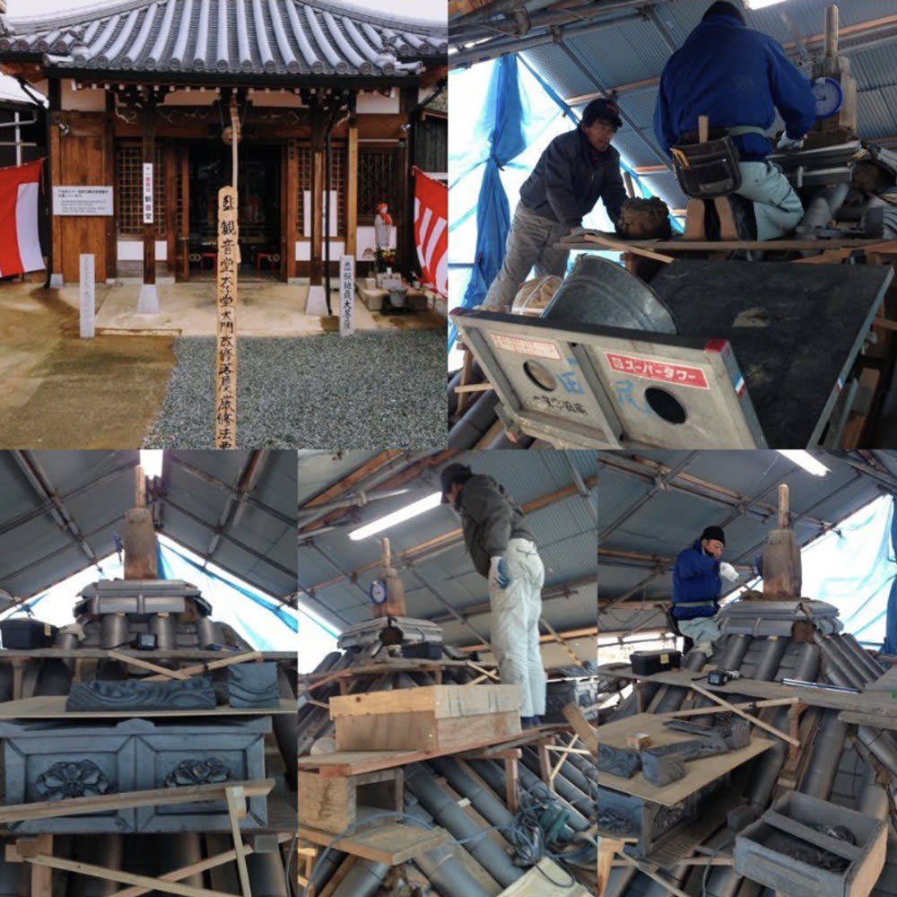
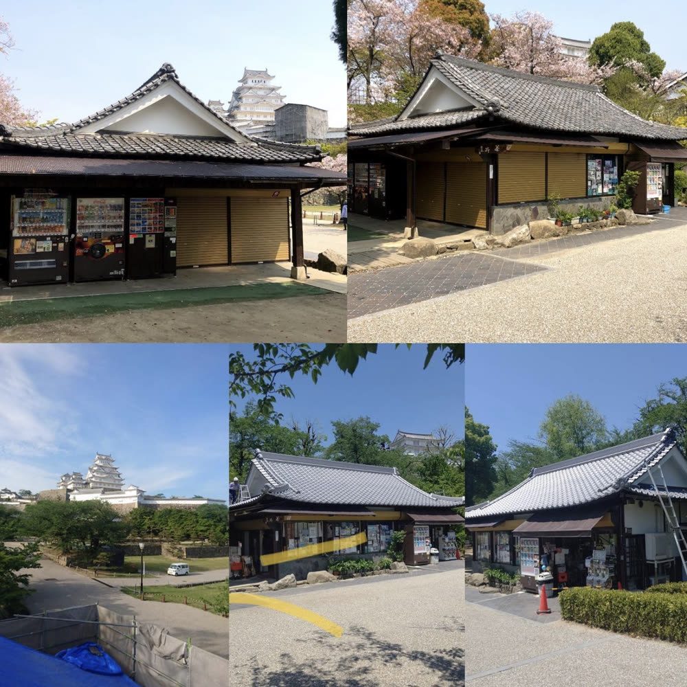
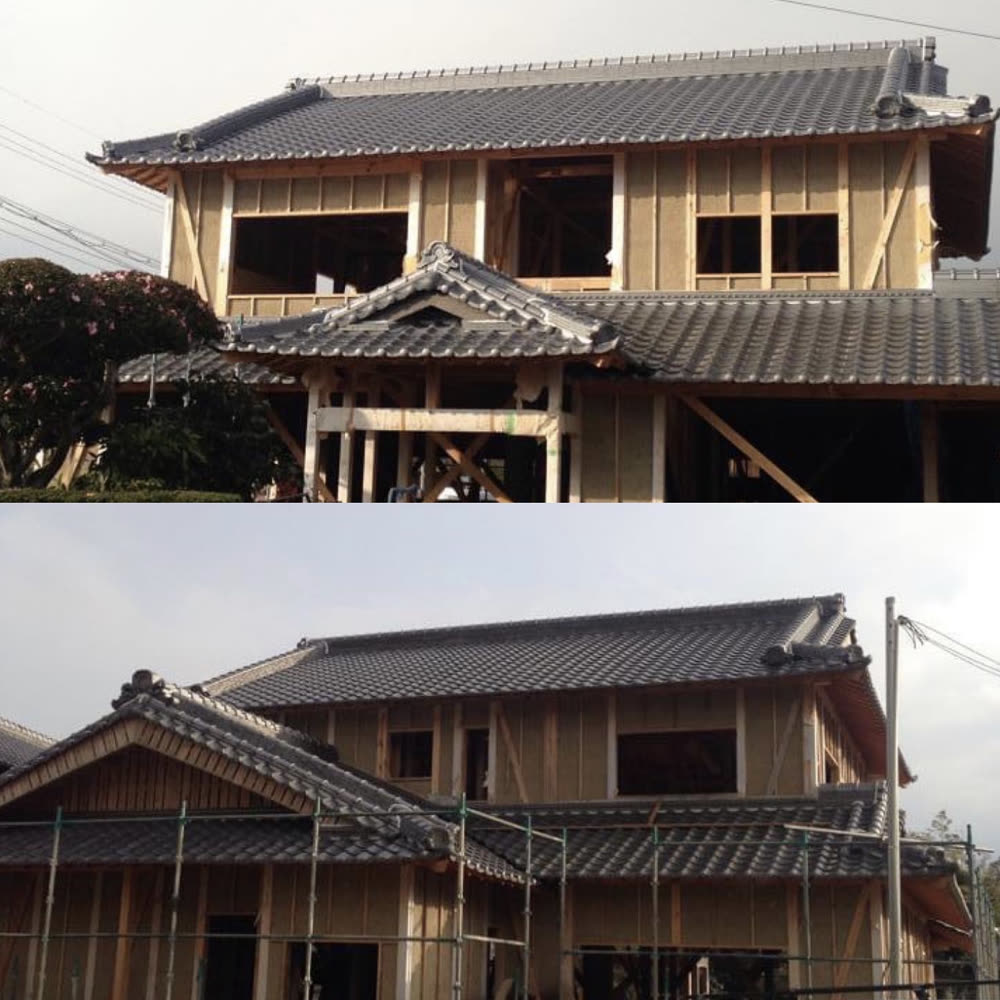
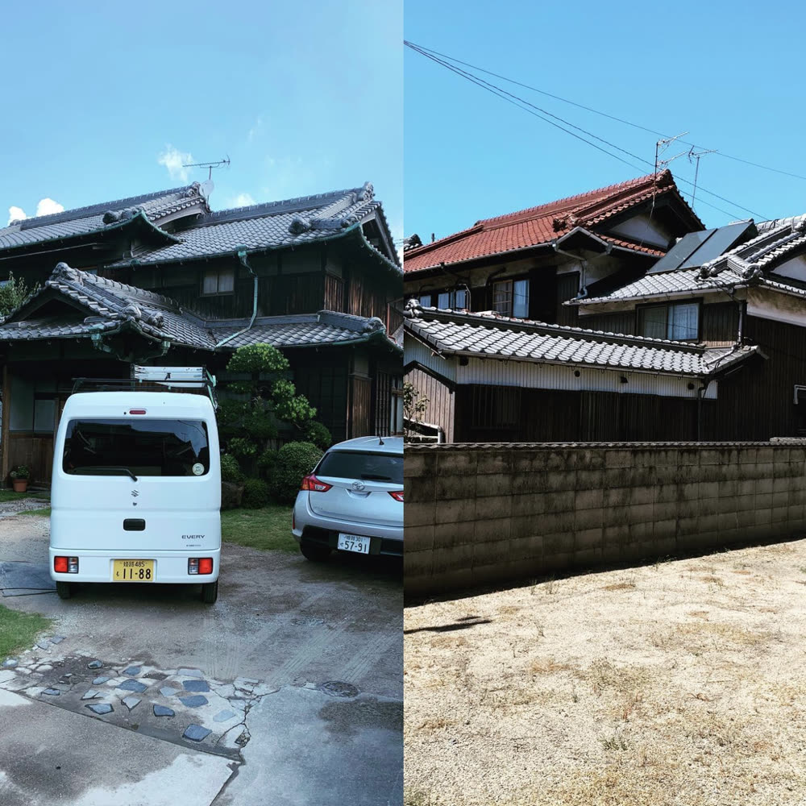
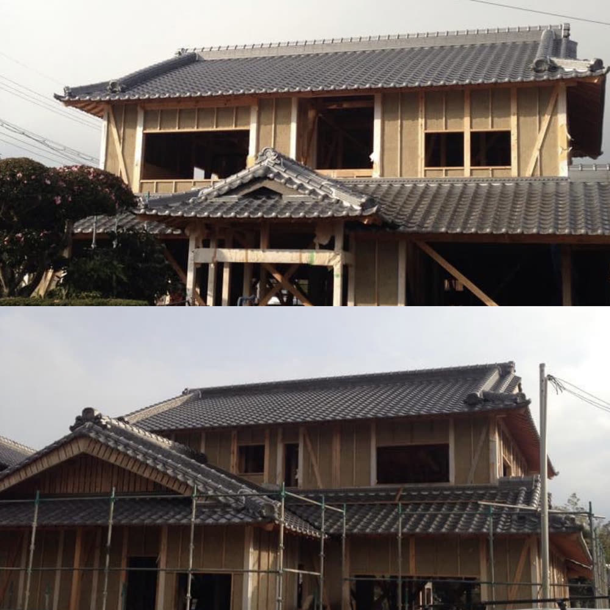
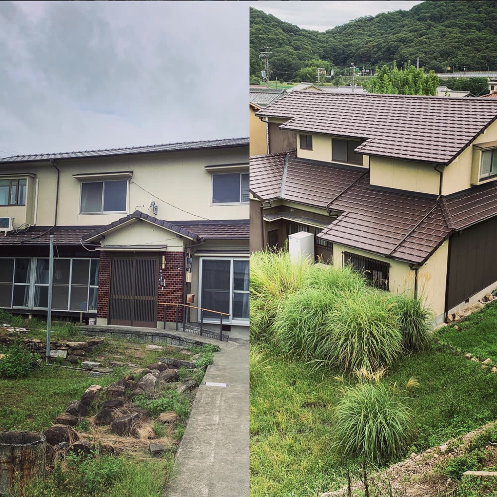
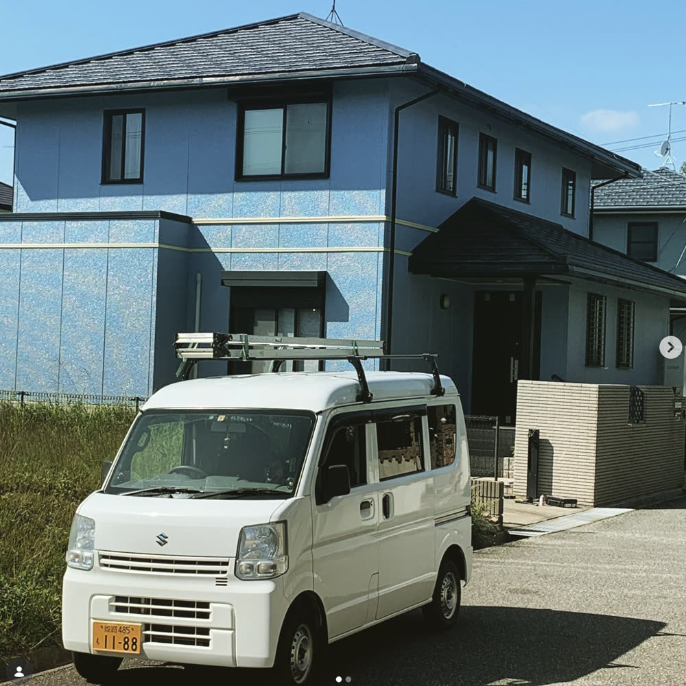
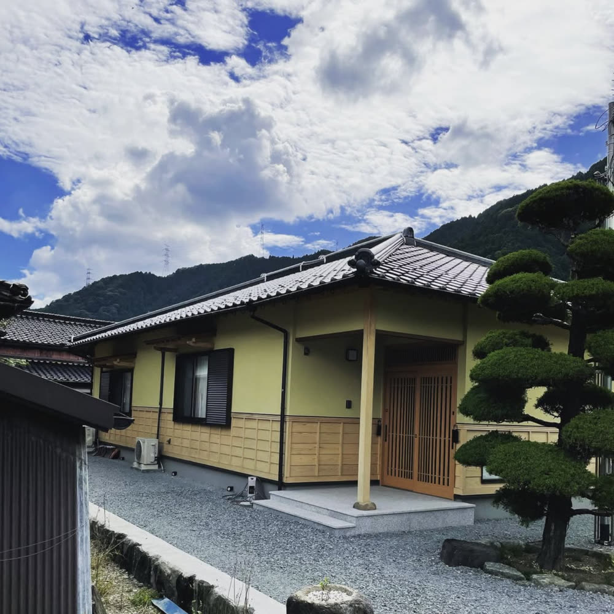
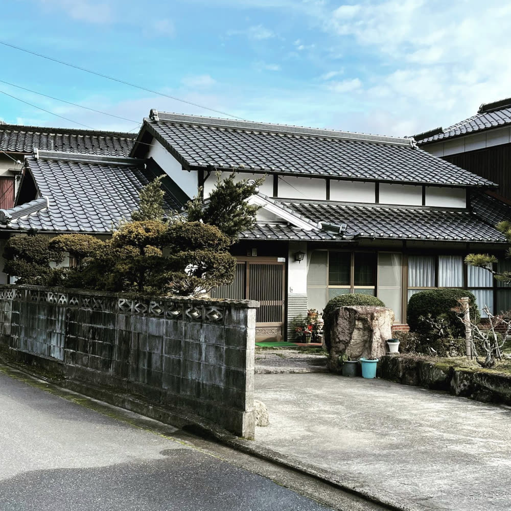
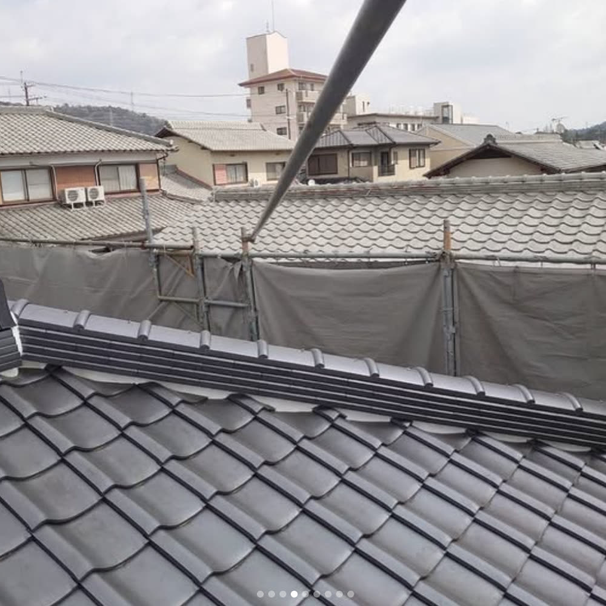

01 / HOUSE得意分野
日本家屋・和風住宅の瓦工事
和瓦の美しさは、年月とともに深まります。いぶし瓦の青銀色は時を経て銀黒色へと変化し、住まいに風格を与えます。新築の瓦葺きから、築50年以上の葺き替え、漆喰の打ち直し、棟取り直しまで。瓦のことを知り尽くした職人が、必要な箇所だけを的確に直します。
この工事を相談する →宮崎市で創業26年・施工2,000件以上。職人歴35年の確かな技術と10年保証で、あなたの家の屋根を守ります。
宮崎市で2000年の創業以来、地元のお客様に寄り添い続けてきた実績です。
職人一人ひとりが誠実に、丁寧に、あなたの大切な家の屋根を守ります。

「瓦がずれた」「雨漏りが止まらない」「葺き替えを検討したい」。瓦にまつわるあらゆるお悩みに、職人歴35年の技術でお応えします。
和瓦の美しさは、年月とともに深まります。いぶし瓦の青銀色は時を経て銀黒色へと変化し、住まいに風格を与えます。新築の瓦葺きから、築50年以上の葺き替え、漆喰の打ち直し、棟取り直しまで。瓦のことを知り尽くした職人が、必要な箇所だけを的確に直します。
この工事を相談する →「瓦屋根は隙間から雨水を入れて出す構造」です。この仕組みを理解しない業者がコーキングで隙間を埋めてしまい、かえって雨漏りが悪化するケースが後を絶ちません。瓦の構造を35年見てきた職人だからこそ、原因を正確に見極め、根本から解決します。
この工事を相談する →瓦自体は100年もちますが、その下の防水シートは20〜30年で劣化します。台風の多い宮崎だからこそ、定期的な点検と瓦のズレ・浮きの補修が欠かせません。被害が出る前に、プロの目で屋根を守ります。無料点検も承ります。
この工事を相談する →本瓦葺き、反り屋根、鬼瓦の据え付け。寺院・神社の屋根は、瓦の構造を熟知した専門職人でなければ施工できません。棟積み、箕甲、隅棟といった複雑な構造を、伝統の技法で仕上げます。宮崎県内の重要な建造物の屋根を、次の世代へ守り継ぐ仕事です。
この工事を相談する →神社仏閣から一般住宅、商業施設まで。ビフォーアフターで技術力をご覧ください。









工事して終わりではありません。施工後10年の長期保証で、万が一の不具合にも誠実に対応。地元・宮崎市の業者だからこそ、いつでも駆けつけられる安心があります。
※新築の施工に限ります
施工実績2,000件以上のお客様からの声
台風で瓦がずれて不安でしたが、すぐに無料で診てもらえました。丁寧な説明で納得して任せられ、仕上がりも綺麗。地元の職人さんで安心です。
築30年で雨漏りが心配でしたが、必要な工事だけを提案してくれました。押し売りが一切なく、見積も明朗。お願いして本当に良かったです。
店舗の屋根改修をお願いしました。営業に支障が出ないよう配慮いただき、工期もスピーディー。35年の職人さんの腕は確かでした。
確かな品質の証。一流メーカーの正規認定を受けています。
お客様からよくいただくご質問にお答えします
| 社名 | 株式会社秦野瓦店 |
|---|---|
| 所在地 | 宮崎県宮崎市 |
| 創業 | 2000年（創業26年） |
| 資本金 | 500万円 |
| 事業内容 | 瓦工事／金属・トタン屋根／雨漏り修理／屋根葺き替え／新築屋根工事／ビル・商業施設の屋根工事／無料屋根診断／台風対策 |
| 対応エリア | 宮崎市全域 |
| 認定代理店 | KMEW／三州鶴屋／淡路瓦 |
| 保証 | 施工10年保証 |
| 電話 | 090-000-0000 ※確認後差し替え |
| メール | hatano1130ryu@gmail.com |
「うちの屋根は大丈夫？」その不安、無料で解消します。台風が来る前に、プロの目で屋根の弱点をチェック。被害が出てからでは業者が混み合い、対応が遅れます。
担当者より折り返しご連絡いたします。
お急ぎの場合はお電話（090-000-0000）でもどうぞ。